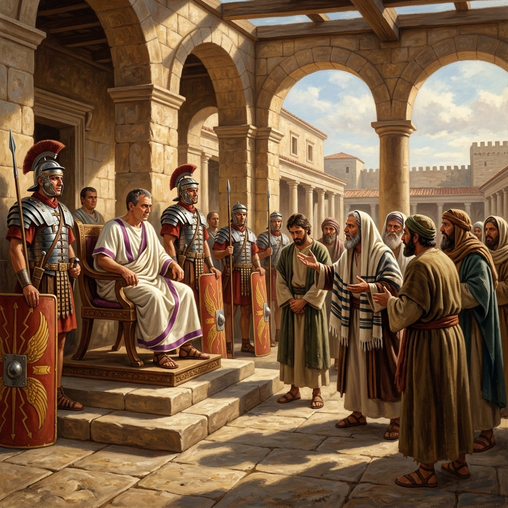
一世紀羅馬行省治權與社會
從聖經敘事與古典文獻印證西元一世紀羅馬帝國的地方統治體制，探討行省巡撫、稅收制度、行政機器，以及猶太地方的司法主權與高壓統治實態。

米蘭敕令時代與李錫尼覆滅
深入探討公元313年米蘭敕令頒布前後的羅馬帝國地緣政治，分析君士坦丁與李錫尼的權力博弈、宗教寬容政策的確立，以及李錫尼的最終覆滅。

羅馬秩序的終結與日耳曼王權的奠定
深入研究五世紀西羅馬帝國結構崩潰與奧多亞賽的崛起、邊疆外交重組（與東帝國、汪達爾、西哥德關係）、內政與客宿權稅收改革、亞利烏派政教關係與最終覆滅歷史。

羅馬晚期改革與農奴制
深入研究從戴克里先到君士坦丁大帝時期的羅馬晚期改革，包含人頭-土地稅雙軌制（Capitatio-Iugatio）的財政理性化設計與法律實踐，隸農莊園向中世紀封建莊園與農奴制的演進，以及世襲職業行會與兵役體系的歷史過渡。

羅馬晚期軍制變遷與哥德人崛起
深入探討羅馬晚期軍事防線的結構性調整，包含軍隊蠻族化與外包僱傭的財政與兵源背景，哥德人的亞利烏派基督教皈依，阿德里安堡戰役，以及382年同盟條約下國中之國的建立與西羅馬帝國的最終解體。
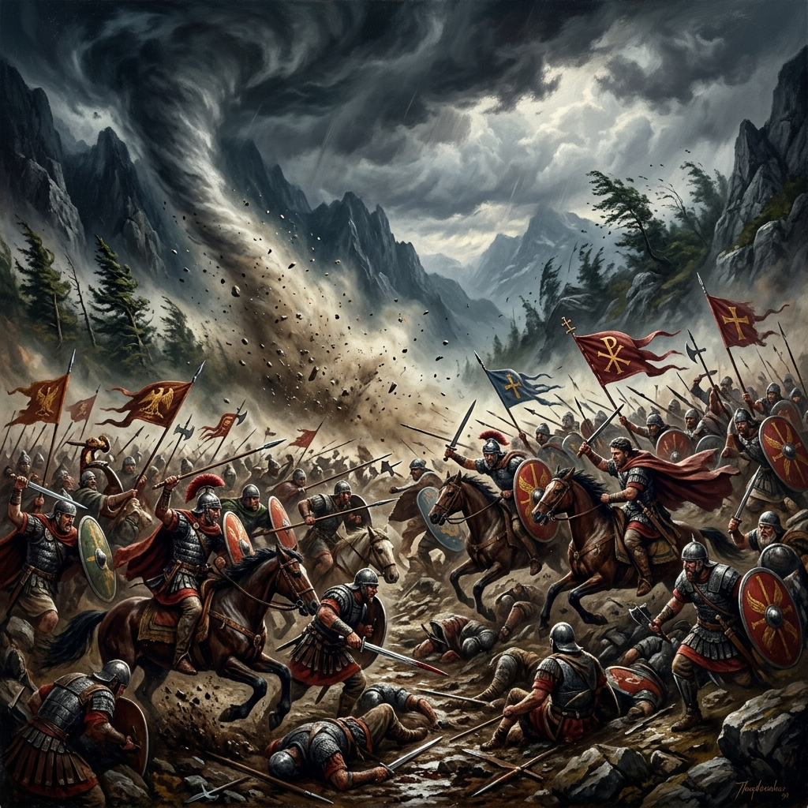
冷河戰役及其歷史學再闡釋
深入探討羅馬晚期冷河戰役的地緣政治斷裂、西軍袋形合圍戰術、阿爾比提翁倒戈、極端氣象「波拉風」對遠程彈道的物理干預，以及哥德同盟軍流血稅的反噬效應、西部野戰軍主力消亡與406年萊茵河大入侵的深遠影響。

東羅馬權力重組與蠻族危機
深入探討公元395至408年東羅馬帝國在阿卡狄烏斯統治下的權力重組、宮廷政治與蠻族危機，分析近衛軍長官魯菲努斯、大內侍尤特羅皮烏斯、蓋納斯兵變與專政、皇后尤多西亞與大主教金口約翰的權力抗衡，以及安提米烏斯的攝政與波斯王伊嗣俟一世地緣監護的歷史影響。
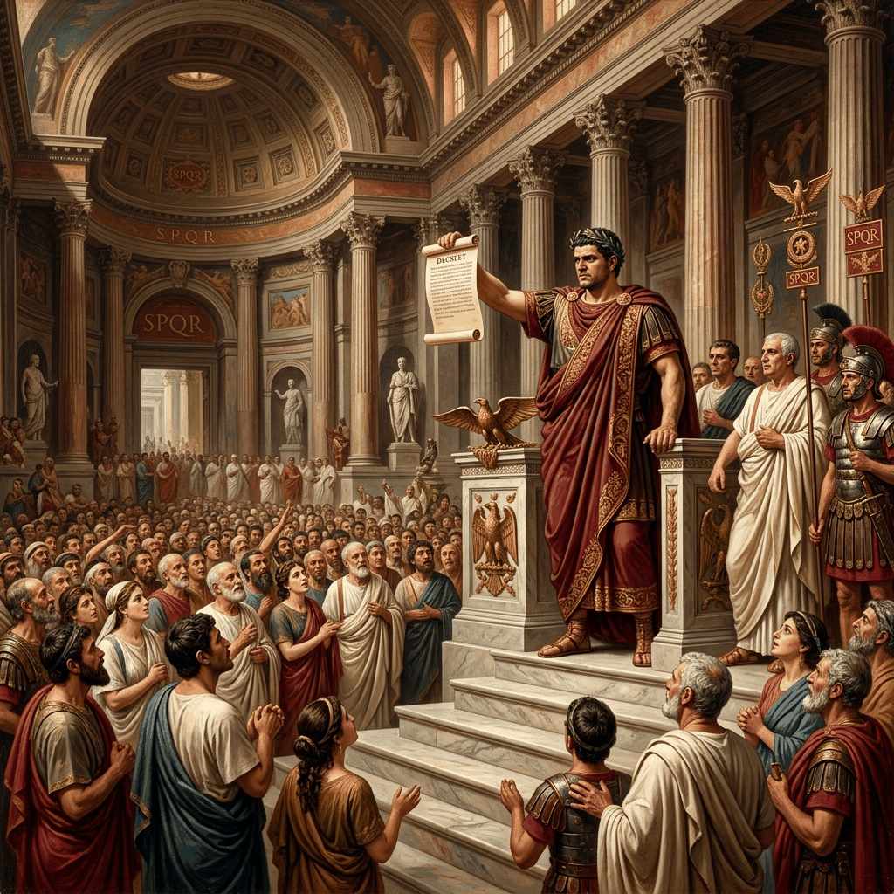
卡拉卡拉與《安東尼努斯敕令》
深入研究塞維魯王朝皇帝卡拉卡拉於西元212年頒布的《安東尼努斯敕令》（Constitutio Antoniniana）的歷史背景、吉森莎草紙40號文獻載體、投降者（dediticii）的法理爭議、稅制改革及遺產稅翻倍的財政實效、貨幣安東尼尼安努斯貶值與信用崩潰，以及輔助軍瓦解與羅馬人身份認同重塑的多維歷史效應。
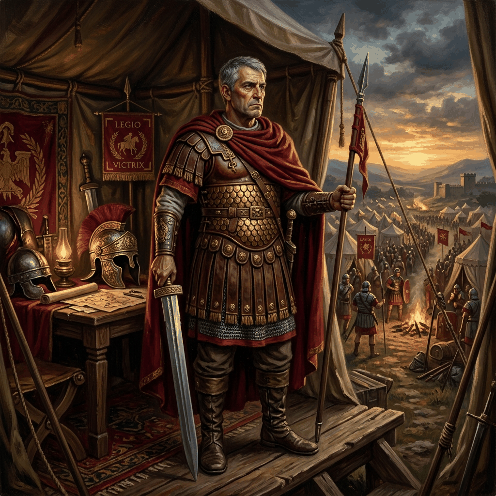
斯提里科與晚期羅馬瓦解
深入剖析西羅馬帝國雙軍總長斯提里科的傳奇一生，從其半蠻族出身、軍事功勳（擊敗西哥德人、全殲拉達蓋蘇斯）、溫和宗教政策與焚毀《西比拉預言書》的動機，解構帕維亞兵變如何引發帝國瓦解的多米諾骨牌效應。
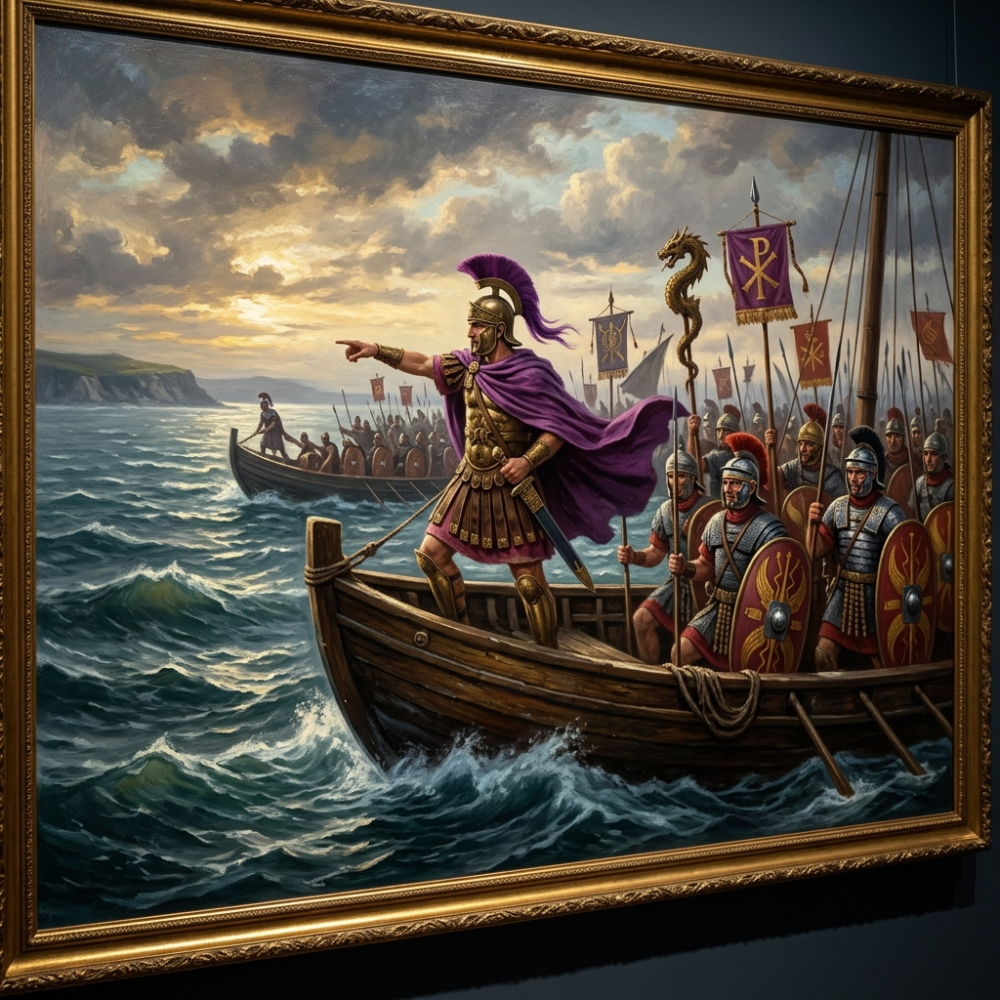
君士坦丁三世與五世紀初邊疆危機
深入解析五世紀初西羅馬帝國不列顛駐軍兵變，篡位者君士坦丁三世的崛起、高盧行政重建、西班牙遠征與「奧諾里亞奇」衛隊角色，以及將領叛亂與最後亞爾圍城戰之歷史啟示。
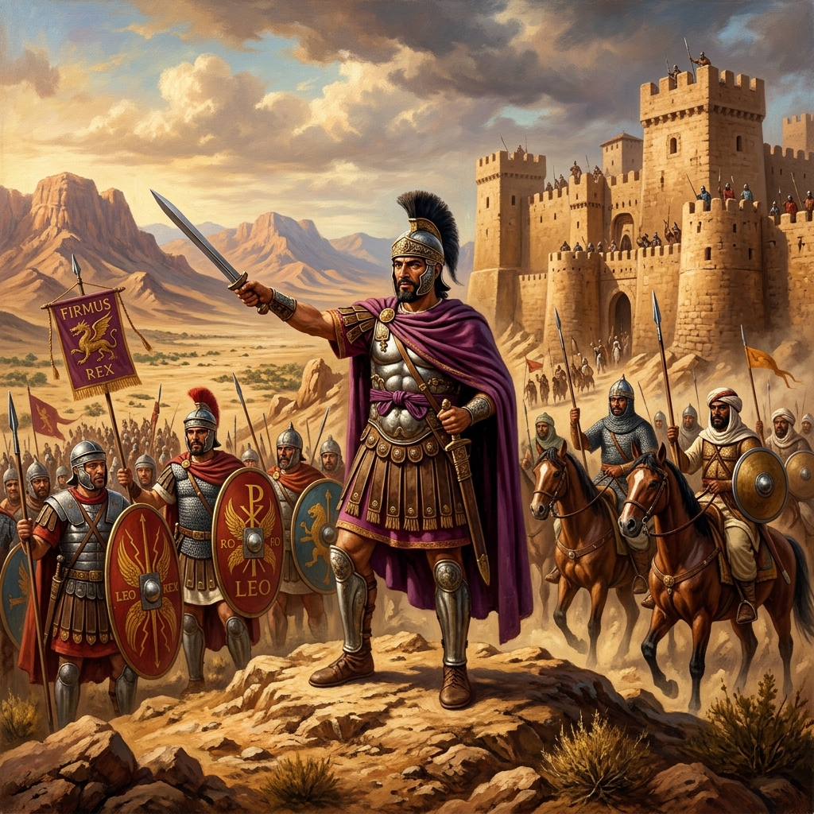
費爾穆斯叛亂與北非防務危機
深入研究西元372年柏柏爾裔羅馬軍官之子費爾穆斯在北非發起的僭越叛亂，剖析地方系統性腐敗、老狄奧多西平叛經過、多納圖斯派的宗教交鋒，以及其對老狄奧多西之死、吉爾do之戰與北非淪陷的深遠影響。

蠻族崛起的政治重塑與克洛維霸權
深入研究法蘭克人從部落聯盟到王國奠基的歷史軌跡，探討民族生成（Ethnogenesis）理論、薩利安習慣法的編撰、墨洛溫王朝與羅馬教會的聯盟，以及克洛維一世的政治神學與蘇瓦松戰役等關鍵地緣政治事件。
阿拉里克與哥德大遷徙
深入探討西哥德民族建構，阿拉里克的早期軍事生涯（冷河戰役、希臘遠征），伊利里庫姆軍區司令任期，西哥德全族大遷徙的後勤與生存策略，波倫提亞戰役與維羅納戰役，以及410年羅馬之劫的政治威懾、北非遠征計畫和布森托河的合葬傳奇。
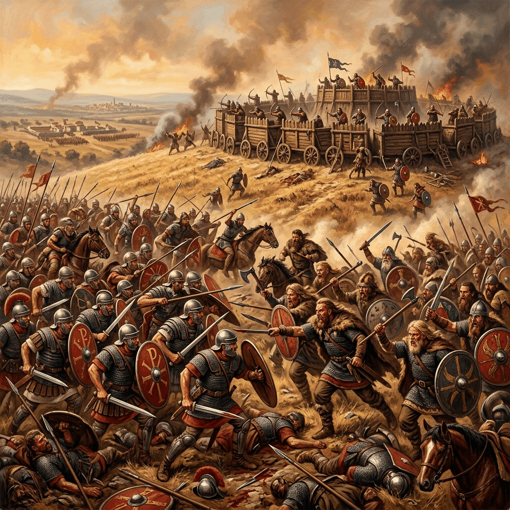
阿德里安堡戰役
深入探討公元378年阿德里安堡戰役的宏觀地緣政治背景，包含匈人入侵引發的哥特人口遷徙危機、多瑙河安置事件、羅馬官員的行政腐敗與馬爾恰諾波利斯衝突、雙方戰略目標與作戰序列、兩軍遭遇與交戰經過，以及戰後公元382年同盟條約的地緣政治影響與西羅馬帝國的最終解體路徑。
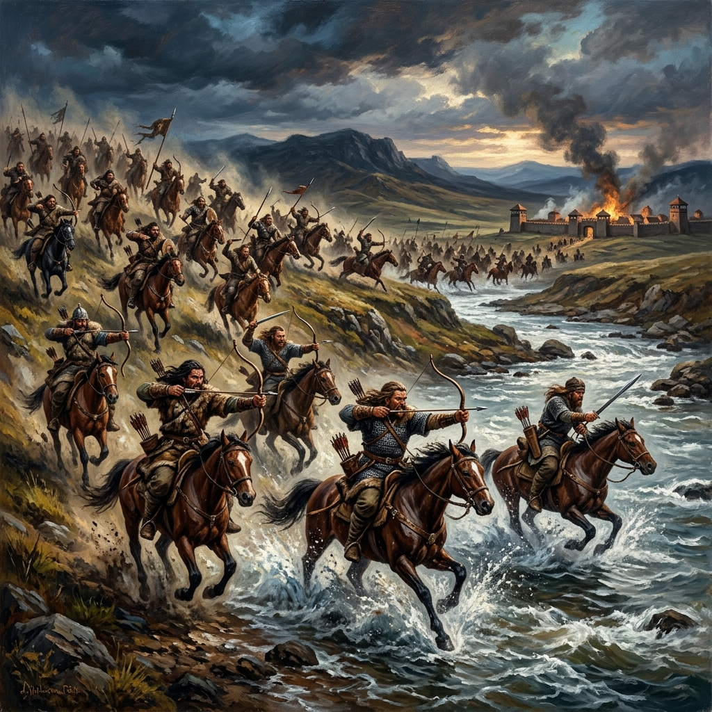
匈人的登場與晚期羅馬地緣政治
深入解析公元370年代匈人越過頓河對黑海北岸地緣秩序的重塑，探討古基因組學揭示的匈奴遺傳聯結，以及匈人在阿德里安堡戰役與冷河戰役中的戰略角色與地緣資產。
阿陶爾夫與西哥德轉型
深入研究西哥德君主阿陶爾夫的政治抉擇，分析他從試圖抹去羅馬名號建立「哥德帝國（Gothia）」到轉為以哥德武力守護「羅馬法治秩序（Romania）」的思想轉變，以及他與羅馬公主加拉·普拉西提阿聯姻的地緣政治影響與歷史遺產。
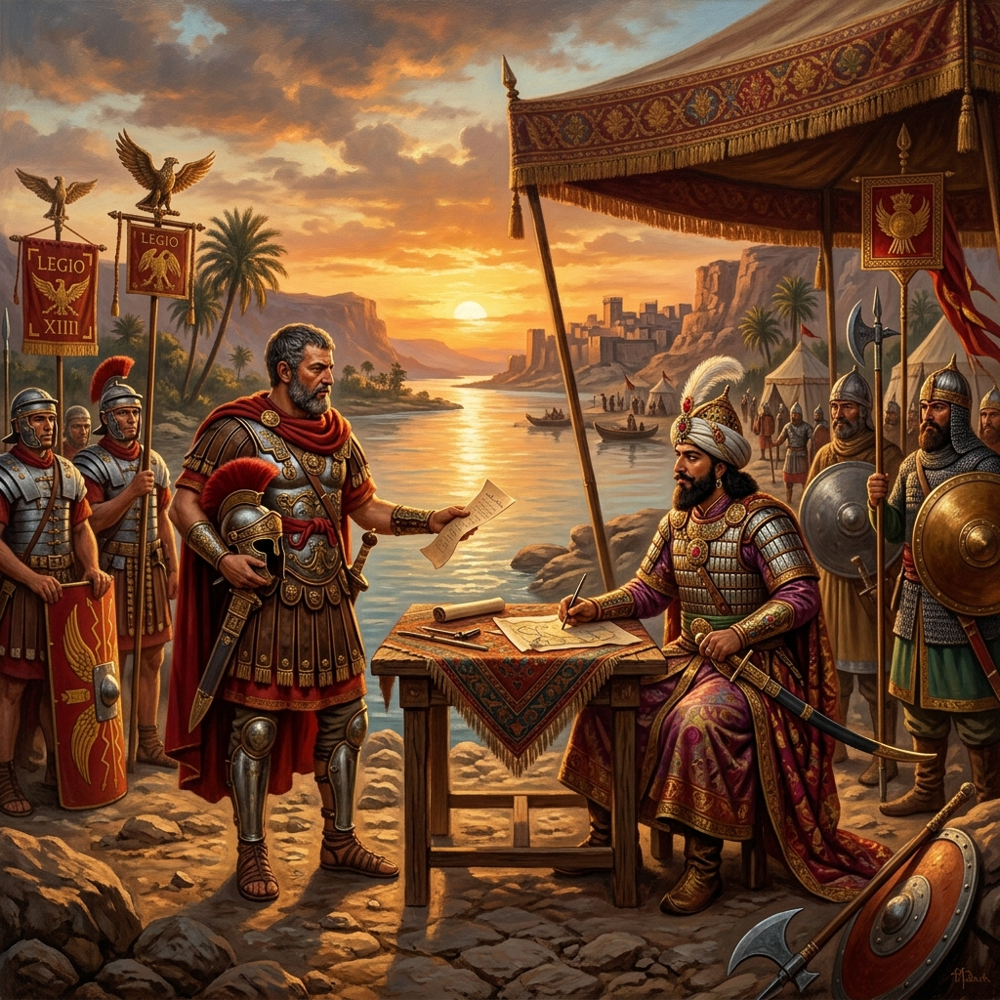
羅馬與波斯地緣關係
深入研究公元378年前後羅馬帝國與波斯薩珊王朝在亞美尼亞與美索不達米亞的地緣對峙，解析阿德里安堡戰役後的戰略格局重塑、阿奇利塞內和約瓜分亞美尼亞，以及共同防禦高加索防線的協作機制。
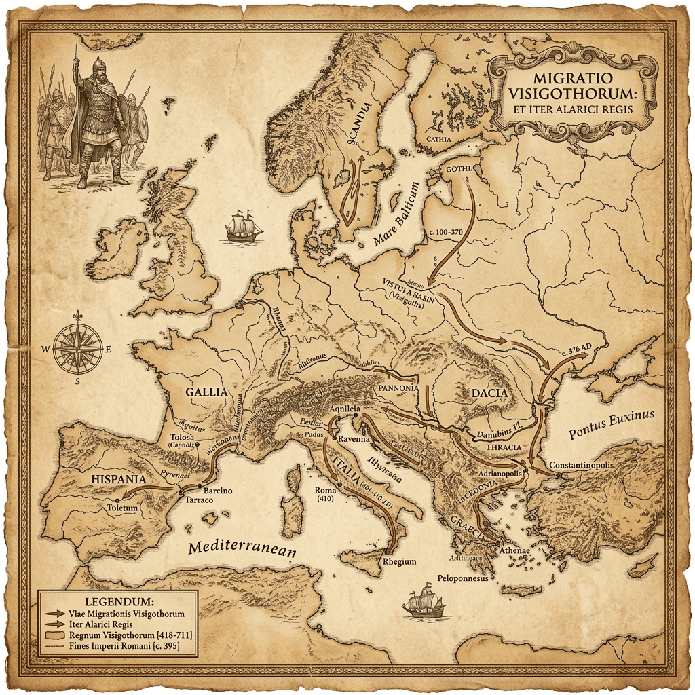
阿薩納里克家族與特爾文吉哥德人的統治演變
深入探討西元四世紀多瑙河邊疆特爾文吉哥德人的政治結構，剖析阿薩納里克家族連續三代（阿里亞里克、奧里克、阿薩納里克）的反羅馬立場與基督教迫害機制，以及在匈人入侵後如何面臨內部分裂與最終的權力崩解。

丕平獻土與教宗國誕生
深入研究西元八世紀中葉丕平獻土的地緣政治背景、卡洛林與教廷的權力交換機制、《君士坦丁贈禮》的法理偽造陰謀，以及對中世紀西歐政教關係的深遠歷史影響。

卡洛林教育基建與知識復興
探討卡洛林王朝教育基建與宗教變革、手抄室與卡洛林小草體書寫革命、跨國學者網絡、基督教化七藝與課堂實踐，以及文明火種對後世中世紀大學的深遠影響。

奧托-薩利安帝國教會體制
奧托王朝與薩利安王朝的帝國教會體制、政教合一的運作機制、巡迴朝廷制度，以及敘任權之爭的歷史根源。

中世紀巡行王權的權力運作
深入研究十世紀神聖羅馬帝國皇帝奧圖一世在九五五年的巡行與戰事軌跡，解析巡行王權的協商式統治、動態禮儀展演、帝國教會體制與物資汲取物流機制。

從皇帝稱號看羅馬政教關係演變
從三世紀危機後的戴克里先確立君主制，到君士坦丁大帝開啟基督教的寬容時代，再到格拉提安與迪奧多西一世將尼西亞信仰確立為國教，解析皇帝稱號的演變如何折射出羅馬帝國晚期的政教關係與政治神學。

使徒信經的歷史演變與神學建構
深入研究使徒信經從新約雛形、古羅馬信經雙語見證，到皮爾米紐斯文本奠基，以及加洛林道德修正運動與禮儀標準化推廣的歷史演變。

聖職與婚娶
深入探討基督宗教神職人員生育、婚姻與財產繼承的歷史演變與政權博弈。

宗教戰爭(一)：胡斯戰爭
揚·胡斯的宗教改革先驅運動、波希米亞的宗教衝突與軍事變革、戰車壘戰術革新，以及對歐洲宗教格局的深遠影響。

宗教戰爭(二)：卡特里派
深入研究中世紀南法阿爾比十字軍東征、卡特里派（阿爾比派）二元論神學與禁慾實踐、宗教裁判所的官僚化清洗，以及《富尼埃登記簿》與微觀歷史學《蒙塔尤》的思想異質性。

英國的憲法
深入研究英國不成文憲法的歷史演進（大憲章、光榮革命、權利法案）、修訂機制與彈性、尊嚴與效能雙重結構，以及2022年至2026年間的現代憲政轉型。

歐洲造紙術的歷史演變
研究歐洲造紙術的地中海傳播、法布里亞諾技術革命、荷蘭式打漿機與長網造紙機機械化，以及紙張作為物質中介對近代官僚體制、宗教改革與古騰堡印刷術的歷史重塑。

西元紀年的確立與演進
深入解析西元紀年（AD）的提出背景、關鍵歷史人物（狄奧尼修斯、尊者比德、查理曼大帝）、曆法改革、東西方教會的分裂以及全球標準化（ISO 8601）與缺失的西元零年問題。

希爾紹修道院
希爾紹修道院的千年歷史、威廉大院長的改革運動、希爾紹建築學派的羅馬式美學巔峰，以及九年戰爭後的廢墟重生。
萊茵河－多瑙河地緣戰略
深入探討歐洲兩大水系萊茵河與多瑙河的地理水文特徵，解析羅馬帝國的雙河界牆與邊境經濟圈、西元406年除夕萊茵河大越渡之西羅馬帝國連鎖效應，以及從中世紀查理曼運河到當代航道的地緣政治與工程演變。

美國的誕生(一)
探索1607年以前美洲原住民的文明成就、大航海時代的技術革命、哥圍布大交換，以及西班牙、法國、英國的早期殖民衝突。

美國的誕生(二)
探索1607至1754年英屬北美十三殖民地的區域性分化、勞動力體制向種族奴隸制的轉型、邊疆衝突與大西洋世界在重商主義、光榮革命、啟蒙運動和大覺醒下的文化整合。

荷蘭建國與地緣政經
深入解析荷蘭從低地十七省到聯省共和國的建國歷程、東印度公司的全球貿易帝國、黃金時代的藝術巅峰與當代政經轉型。
晚清中樞權力變革與肅順之死
深入研究咸豐朝後期肅順推行的鐵腕改革，剖析戊午科場案、戶部寶鈔案與削減八旗兵俸等吏治整肅措施，解構辛酉政變中顧命八大臣與兩宮太后、恭親王奕訢的法理與公文權力博弈，及洋務運動的起源。
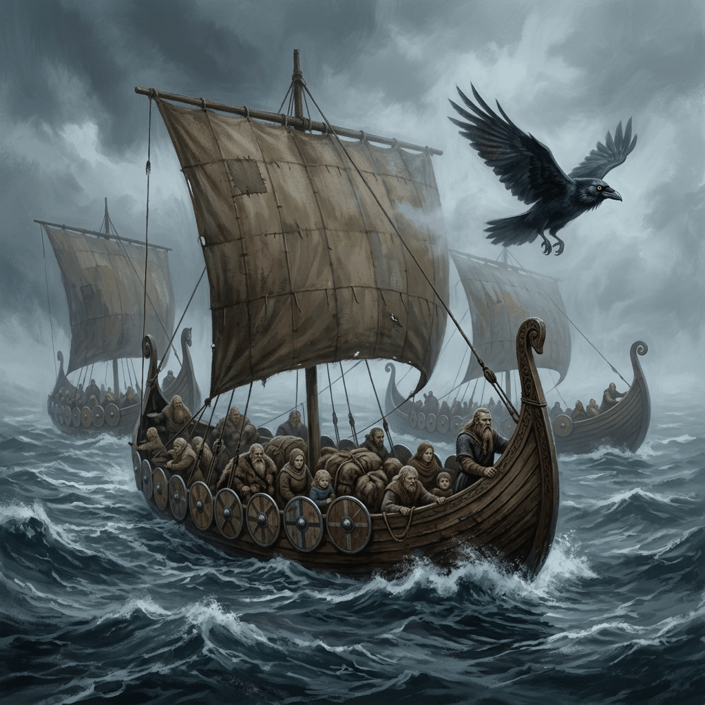
序章 (Prologue)
歷史小說《鐵劍與托加》序章。講述哥德人起源的神話傳說，古老國王貝里格帶領族人乘三船南渡薩爾馬提亞海洋，以及獨眼老渡鴉高茲在頓河畔預見紅色風暴與大遷徙諸神黃昏的詩意開端。
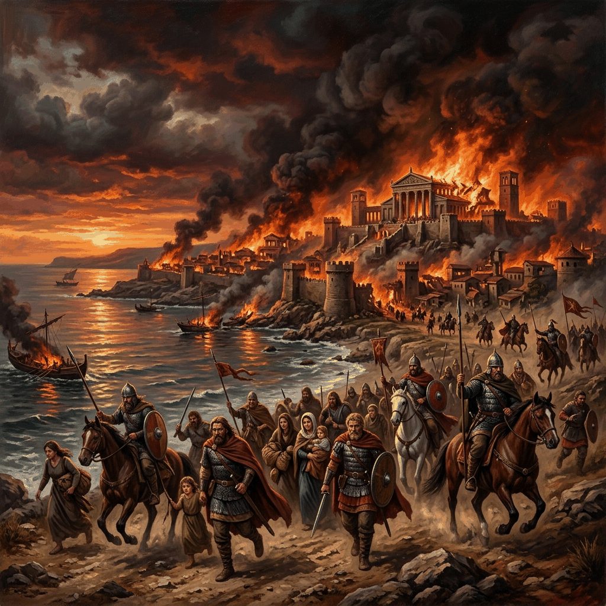
第一章：黑海落日，狂風中的火種
歷史小說《鐵劍與托加》第一章。講述西元375年匈人突然越過頓河入侵，東哥德老國王厄曼納里克在赫爾松焚城自盡，青年阿蘭將領薩烏爾與東哥德將領阿拉修斯、薩夫拉克護送幼王向西突圍逃難的悲壯序幕。